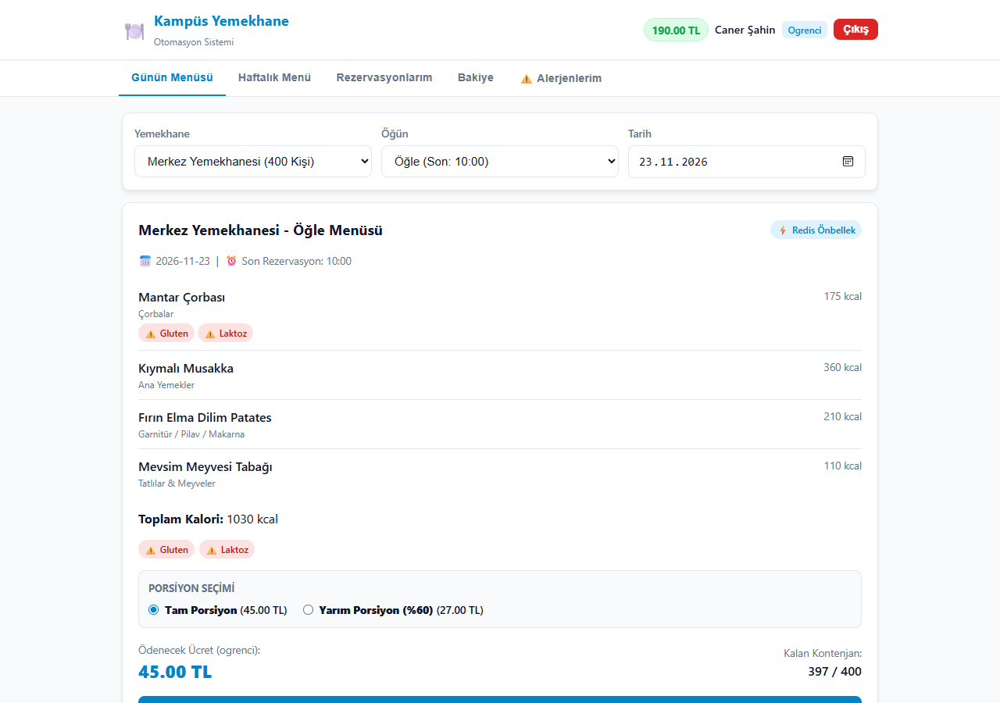
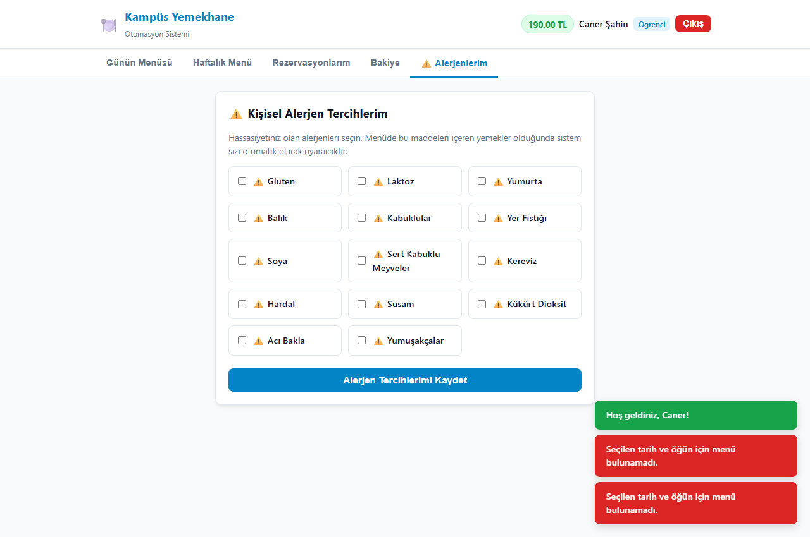
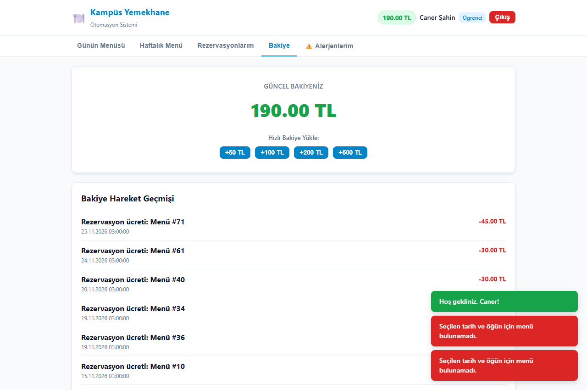

Kampüs Yemekhane Otomasyon Sistemi
Docker Tabanlı, GTID Replikasyonlu, Katmanlı Mimari ve Redis Destekli Web Uygulaması
fetch) ile duyarlı (responsive) arayüz oluşturulmuştur. Tüm istekler Apache 2.4 ters vekili (:8080) üzerinden karşılanır; /api/* istekleri iç ağda uygulama:8000 servisine yönlendirilir.
1. Aşama 1: Altyapı ve Veritabanı Replikasyonu
Sistem docker-compose.yml üzerinden tek komutla (docker compose up -d) ayağa kalkacak şekilde 6 servis olarak yapılandırılmıştır:
| Servis Adı | İmaj / Port | Görev |
|---|---|---|
mysql-primary |
mysql:8.0 (:3307) |
GTID ikili log (binlog) tutan birincil yazma veritabanı. |
mysql-replica |
mysql:8.0 (:3308) |
super_read_only = ON kipinde çalışan salt-okunur okuma replikası. |
replica-setup |
mysql:8.0 |
SOURCE_AUTO_POSITION = 1 ile replikasyonu başlatan ve super_read_only ayarlayan kurulum servisi. |
redis |
redis:7-alpine (:6379) |
Menü önbelleği ve oturum deposu (in-memory). |
uygulama |
python:3.11-slim (:8000) |
FastAPI katmanlı REST API sunucusu. |
frontend |
httpd:2.4-alpine (:8080) |
Statik HTML/CSS/JS sunumu ve /api reverse proxy. |
1.1. GTID Replikasyon ve Salt-Okunur Doğrulaması
# 1. Replika durumu kontrolü
docker exec yemekhane-mysql-replica mysql -uroot -prootpass -e "SHOW REPLICA STATUS\G"
# Çıktı: Replica_IO_Running: Yes | Replica_SQL_Running: Yes | Seconds_Behind_Source: 0
# 2. Replikaya doğrudan yazma engeli testi (super_read_only)
docker exec yemekhane-mysql-replica mysql -uroot -prootpass -e "INSERT INTO yemekhane_db.yemekler (ad, kategori_id, kalori) VALUES ('Test', 1, 100);"
# Çıktı: ERROR 1290 (HY000): The MySQL server is running with the --super-read-only option so it cannot execute this statement
# 3. Replika durdurma / yeniden başlatma senkronizasyon testi
docker stop yemekhane-mysql-replica
# Primary üzerinde bakiye yükleme işlemi yapıldıktan sonra:
docker start yemekhane-mysql-replica
# Replika GTID üzerinden eksik transaction'ları otomatik çekip Seconds_Behind_Source: 0 durumuna döndü.2. Aşama 2: Katmanlı Mimari, Stored Procedure ve Arayüz
Backend uygulaması 4 katmanlı olarak tasarlanmıştır: Routers (HTTP yönlendirme ve Pydantic doğrulama) → Services (iş kuralları, önbellek yönetimi, hata dönüşümü) → DAL (Primary/Replica bağlantı havuzu seçimi ve SQL/SP çağrıları) → MySQL (Tablolar, View'ler ve Stored Procedure'ler).
2.1. Bir İsteğin Uygulama İçindeki Yolu (Örnek: Rezervasyon Yapma)
- İstemci & Ters Vekil: Kullanıcı arayüzden porsiyon seçip "Bu Menüye Rezervasyon Yap" butonuna tıklar.
app.jsPOST /api/reservationsisteğini Bearer token ile gönderir. Apache bu isteğiuygulama:8000servisine iletir. - Router (
app/routers/reservations.py):get_current_userbağımlılığı Redis üzerinden token'ı doğrular. İstek gövdesiReservationCreateRequestşemasıyla doğrulanır veReservationService.create_reservation(...)çağrılır. - Service (
app/services/reservation_service.py):ReservationDAL.make_reservation(...)çağrısını yürütür. Stored Procedure'den gelenSQLSTATE 45000hata mesajlarını yakalayıp HTTP400 Bad RequestJSON yanıtına dönüştürür. - DAL & Veritabanı (
app/dal/reservation_dal.py):get_primary_connection()ile Primary veritabanına bağlanır,CALL sp_rezervasyon_yap(kullanici_id, menu_id, porsiyon)prosedürünü çalıştırır. Prosedür; saat, kapasite, mükerrer kayıt ve bakiye kontrolleriniFOR UPDATEsatır kilitleriyle atomik olarak gerçekleştirir.
2.2. Replikasyon Gecikmesi (Replication Lag) Önlemi
Listeleme ve menü sorguları get_replica_connection() üzerinden replika sunucusuna yönlendirilir. Ancak rezervasyon yapma, rezervasyon iptali ve bakiye yükleme işlemlerinin hemen ardından kullanıcıya gösterilen güncel bakiye değeri doğrudan Primary veritabanından (get_primary_connection() / use_primary=True) okunur. Bunun nedeni, asenkron replikasyonda milisaniyelik dahi olsa gecikme (replication lag) yaşandığında kullanıcının ekranda eski/bayat bakiyesini görmesini önlemektir.
2.3. Stored Procedure ve Hata Mesajı Doğrulaması (SQLSTATE 45000)
# Bakiye yetersizliği veya son saat sonrası rezervasyon denemesi:
POST /api/reservations {"menu_id": 44, "porsiyon": "tam"}
# HTTP 400 Bad Request
{"detail": "Rezervasyon süresi dolmuştur."}3. Aşama 3: Redis Önbellek ve Oturum Yönetimi
Redis iki temel amaç için kullanılmıştır:
| Görev | Anahtar Şablonu | Geçerlilik Süresi (TTL) | Geçersizleştirme (Invalidation) |
|---|---|---|---|
| Menü Önbelleği | menu:{yemekhane_id}:{tarih}:{ogun_id} |
Günün sonuna kadar (23:59:59) |
Yönetici menüyü güncellediğinde veya değerlendirme eklendiğinde |
| Oturum Deposu | oturum:{token} |
30 dakika (Sliding Expiration) | Kullanıcı çıkış yaptığında (POST /api/auth/logout) |
3.1. Redis Doğrulama Çıktıları
# 1. İlk menü isteği (Cache Miss -> DB okuma -> Cache Set) ve ikinci istek (Cache Hit)
[INFO] redis: [CACHE MISS] Menü Redis'te yok, DB'den okunacak: menu:1:2026-10-27:2
[INFO] redis: [CACHE SET] Menü Redis'e yazıldı: menu:1:2026-10-27:2 (TTL: 19171 sn)
[INFO] redis: [CACHE HIT] Menü Redis'ten getirildi: menu:1:2026-10-27:2
# 2. redis-cli üzerinden anahtar ve TTL kontrolü
docker exec yemekhane-redis redis-cli ttl "menu:1:2026-10-27:2"
# Çıktı: 19148
# 3. Yönetici menü güncellemesi sonrası Cache Invalidation
PUT /api/admin/menus/44 {"ogrenci_fiyati": 50.0}
docker exec yemekhane-redis redis-cli exists "menu:1:2026-10-27:2"
# Çıktı: 0
# 4. Durumsuz (Stateless) backend doğrulaması:
docker restart yemekhane-uygulama
GET /api/auth/me (Aynı token ile) -> HTTP 200 OK (Oturum düşmedi)
POST /api/auth/logout -> docker exec yemekhane-redis redis-cli exists "oturum:..." -> 04. Aşama 4: Değişiklik Talebi (Migration) ve Yeni Özellikler
db/04_degisiklik.sql betiği ile canlı veri korunarak rezervasyonlar tablosuna porsiyon ENUM('tam', 'yarim') NOT NULL DEFAULT 'tam' sütunu ve kullanici_alerjenleri tablosu eklenmiş; sp_rezervasyon_yap güncellenmiştir.
# 1. Replikada yeni sütunun doğrulanması
docker exec yemekhane-mysql-replica mysql -uroot -prootpass -e "SHOW COLUMNS FROM yemekhane_db.rezervasyonlar LIKE 'porsiyon';"
# Çıktı: porsiyon | enum('tam','yarim') | NO | | tam
# 2. Kahvaltıda yarım porsiyon reddi
POST /api/reservations {"menu_id": 49, "porsiyon": "yarim"}
# HTTP 400: {"detail": "Kahvaltıda yarım porsiyon seçeneği bulunmamaktadır."}
# 3. Öğle menüsünde yarım porsiyon (%60 ücret: 45.00 TL -> 27.00 TL)
POST /api/reservations {"menu_id": 50, "porsiyon": "yarim"}
# HTTP 200: {"message": "Rezervasyonunuz başarıyla oluşturuldu.", "rezervasyon_id": 366, "guncel_bakiye": 163.0}
# 4. Eski Redis menü kayıtlarının temizlenmesi
docker exec yemekhane-redis redis-cli flushdb5. Uygulama Ekran Görüntüleri (Masaüstü ve ~400 px Mobil)
Arayüzün ekranları ve telefon görünümü (~400 px genişlik) canlı ortamda doğrulanmıştır:





6. Git Commit Geçmişi ve Etiketler
Geliştirme süreci 3 haftalık zaman dilimine yayılmış ve her aşama kendi etiketiyle işaretlenmiştir:
| Commit | Tarih | Etiket | Açıklama |
|---|---|---|---|
dc7d599 | 2026-10-22 | asama-1 | Docker Compose altyapısı, şema, örnek veri ve GTID replikasyon |
70469dc | 2026-10-26 | asama-2 | FastAPI katmanlı mimari, SP entegrasyonu ve 7 duyarlı ekran |
a41bec1 | 2026-10-31 | asama-3 | Redis menü önbelleği, oturum yönetimi ve cache invalidation |
04763d6 | 2026-11-04 | asama-4 | Migration: yarım porsiyon (%60) ve kullanıcı alerjen uyarısı |